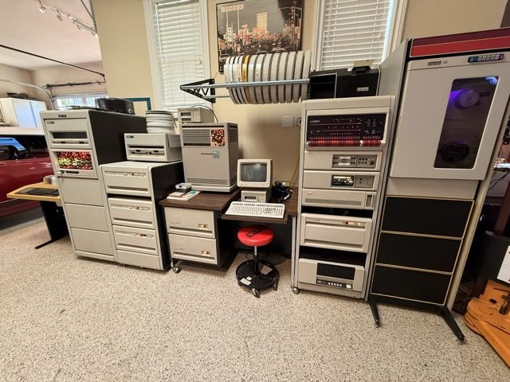

Two RL02 drives
Removable cartridge disksAbout 10 MB per cartridge, with a physical disk pack you can lift out and put on a shelf. Swapping storage was an actual hands-on operation.
Sixteen bits. Four megabytes. A room full of character. Meet a minicomputer with spinning disks, real UNIX, and another chapter to write.
Meet the machine
Here, a disk is something you can hold. The hardware makes the work of computing wonderfully tangible.
About 10 MB per cartridge, with a physical disk pack you can lift out and put on a shelf. Swapping storage was an actual hands-on operation.
Around 622 MB in a serious piece of machinery. The RA82 belongs to the era when adding disk capacity meant making room in a cabinet, not slipping a card into a slot.
Reel-to-reel storage with a purpose: moving and preserving data. Tape is sequential, so finding a file means physically winding your way to it. Patience was part of the interface.
This PDP-11 is running 2.11BSD and is connected to the Internet. The familiar ingredients are here: files, processes, a shell, networking, and sendmail.
This page is being served from the 2.11BSD machine itself. Your browser brings the typography; the PDP-11 delivers the bytes. A small exchange across a very large span of computing history.
# A small greeting from a big cabinet. $ echo 'Hello, Internet.' Hello, Internet. $ echo 'Still in the loop.' Still in the loop. $Illustrative shell session · the enthusiasm is real.
The size of a CPU word and the size of physical memory are different things. Memory management maps a program's smaller address space into a larger physical address space. UNIX can keep different programs in different regions of RAM; a single program does not see all four megabytes as one flat expanse. Working within those boundaries is part of the art of PDP-11 software.